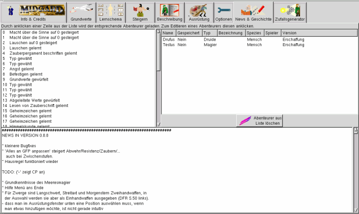
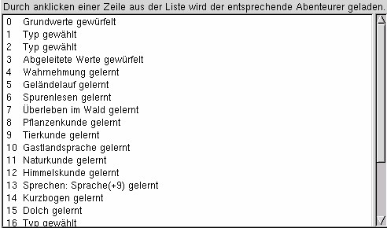
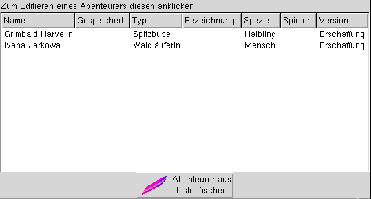
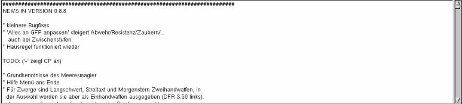

MAGUS - Hilfe
|
Bedienung |
|||||||||||||||
News und Geschichte |
||||||||||||||||
| Zum Seitenanfang | ||||||||||||||||
Notebookseite News & Geschichte
|
||||||||||||||||
| Zum Seitenanfang | ||||||||||||||||
AllgemeinAuf dieser Seite finden sich einerseits Infermationen zu Magus, andererseits dient diese Seite der Steuerung von MAGUS. |
||||||||||||||||
| Zum Seitenanfang | ||||||||||||||||
Redo-Liste Alle Aktionen bei der Generierung oder Verwaltung von Abenteurern werden in diesem Fenster mitgeloggt. Durch einmaliges Anklicken eines Listeneintrags, kann diese Aktion rückgängig gemacht werden. |
||||||||||||||||
| Zum Seitenanfang | ||||||||||||||||
Abenteurer-Liste In dem rechten Fenster sind die aktuell in MAGUS geöffneten Abenteurer mit kurzer Bechreibung aufgelistet. Beim Erstellen eines Spielleiterdokumentes werden die hier aufgelisteten Figuren berücksichtigt. Figuren, die nicht weiterbearbeitet werden sollen, können aus der Liste entfernt werden, indem der Button "Abenteurer aus Liste löschen" und der entsprechende Abenteurer mit einem einzelnen Mausklick selektiert wird. |
||||||||||||||||
| Zum Seitenanfang | ||||||||||||||||
News In dem Fenster News werden die Neuerungen und gefundene, aber noch nicht behobene Fehler aufgelistet. Es empfiehlt sich, auf dieser Liste zu überprüfen, ob ein gefundener Programmfehler bereits bekannt ist. |
||||||||||||||||
| Zum Seitenanfang |